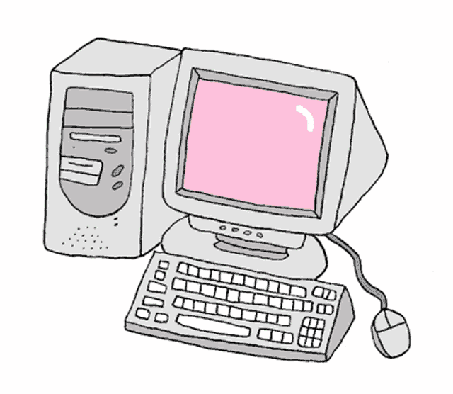

THE INTERCITY WEB


THE WORLD WIDE WEB The world wide web, or simply the Web, has been a 'Killer App' of the
Internet.
Certainly
its capability to display text and graphics and provide access to other pages and information has made it
the fastest growing component of the Internet. Major online services are America Online, CompuServe, and
Prodigy.

GET CONNECTED A way to access the web is to get an account with an Internet Service
Provider, or ISP.The seaccounts include access to the World Wide Web and other Internet resources, and often provide space to store Web pages one will create. A very helpful feature of the web is the capability to move from page to page by selecting specific highlighted words and phrases or images, which are called links.